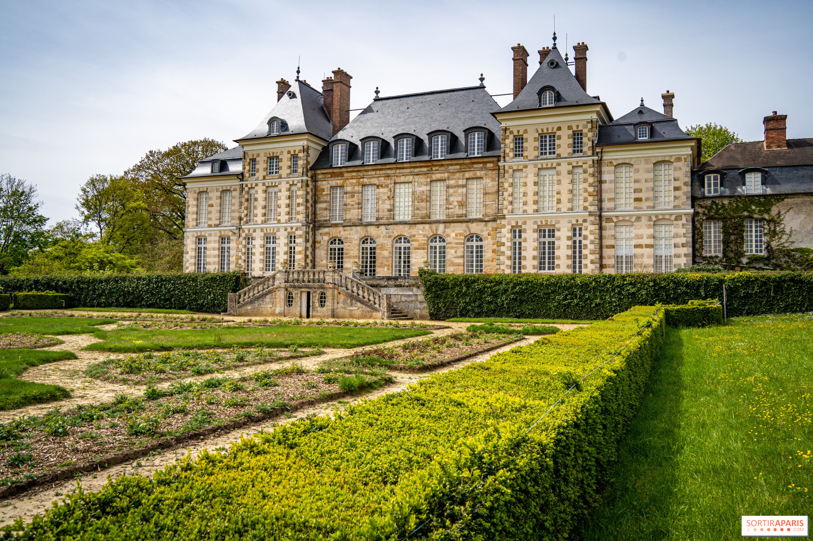

Meer kastelen in Henegouwen
Ontdek andere prachtige kastelen in de buurt van Doornik

Het Château de Beauregard ligt in Froyennes, een deelgemeente van Doornik (Tournai), vlakbij de kerk Saint-Éloi, de oude watermolen en de vijvers. Het kasteel, park en dorpskern vormen samen een beschermd erfgoedgeheel sinds 4 november 1976.
Het huidige kasteel is een neoclassicistisch landhuis dat rond 1795 in opdracht van Hippolyte Marescaille de Courcelles werd gebouwd door de Doornikse architect Antoine Payen de Oudere, op een oude castrale site met adellijke eigenaars sinds de 15e eeuw. Oorspronkelijk had het twee bouwlagen, maar in 1841 werd er een derde niveau toegevoegd in dezelfde stijl.
Het hoofdvolume bestaat uit een rechthoekig corps de logis met twee risalieten, verbonden door een péristyle met Toscaanse zuilen over de volledige breedte van de gevel. De voorzijde heeft een trap (emmarchement) naar het peristyle, met daarboven een entablement met trigliefen waarop een terras met balustrade rust. De gepleisterde gevel telt zeven traveeën en drie bouwlagen.
Het domein omvat een park à l'anglaise met vijver voor het kasteel, omringd door gazons en solitaire bomen zoals ginkgo's, treurwilgen en rode beuken. Ten zuiden ligt een vierkant geheel van bakstenen dependances uit 1842, ontworpen door A. Decraene.
Kasteel Beauregard is een privé-eigendom en niet vrij te bezoeken. Het interieur is niet toegankelijk voor individuele bezoekers. Uitzonderlijke openstelling (bv. erfgoedevents via vereniging Pasquier Grenier) is sporadisch en wordt aangekondigd via lokale kanalen.
Het kasteel en park zijn zichtbaar vanaf de openbare weg en langs wandel- en fietsroutes in en rond Froyennes. De omgeving (kerk Saint-Éloi, oude molen, vijvers, lindendreef) vormt een aangenaam dorpsdecor voor een korte wandeling.
Aangezien het kasteel niet te bezoeken is, kun je de omgeving verkennen en overnachten in Doornik of de Scheldevallei.
Verblijf in het historische centrum van Tournai, op wandelafstand van de kathedraal en het belfort.
Bekijk hotels in DoornikAuthentieke gastenkamers in de groene omgeving van de Scheldevallei.
Bekijk B&B'sOntdek ook logies in Mouscron, Kortrijk of de Frans-Belgische grensstreek.
Bekijk regioCombineer je bezoek aan Froyennes met deze activiteiten in de regio Doornik.
Ontdek de kerk Saint-Éloi, de oude watermolen, de vijvers en het kasteel als decor langs de lindendreef.
Bezoek de UNESCO-kathedraal, het belfort, de Grand-Place en de musea van deze historische stad.
Verken de groene omgeving via routes op RouteYou of Cirkwi met Beauregard als POI.
Bezoek het Kasteel van Antoing of het Kasteel van Beloeil in de buurt.
Ontdek andere prachtige kastelen in de buurt van Doornik
Adres: Rue de Beauregard, 7503 Froyennes (Tournai), België
GPS: 50.6089° N, 3.3756° E